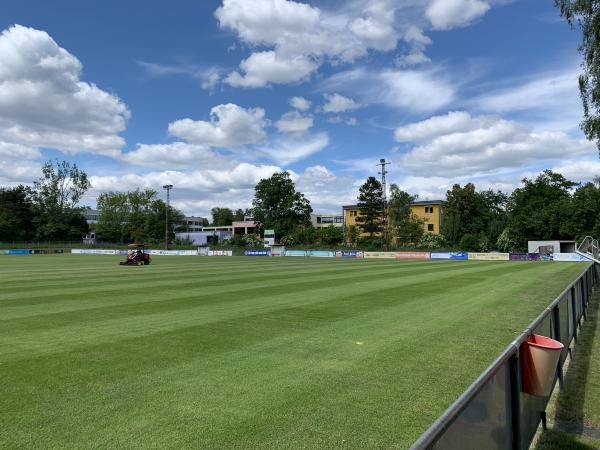
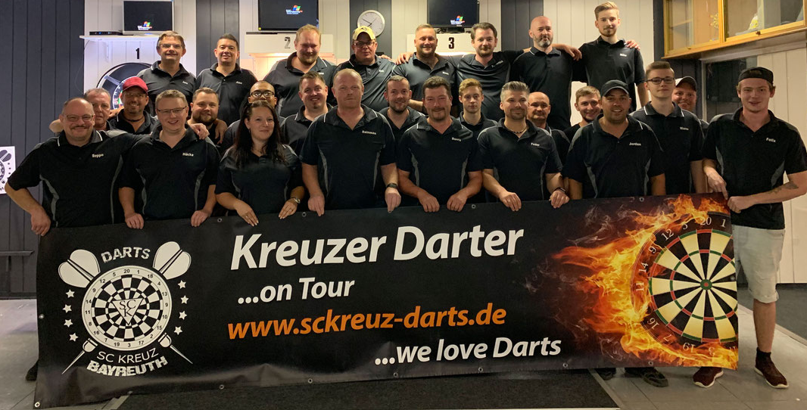

SC Kreuz Bayreuth
e.V. · Gegründet 1928
Unsere Räumlichkeiten
Für jeden Anlass der passende Raum – klicken Sie auf „Jetzt buchen" für eine Anfrage.
Unser Verein
Der SC Kreuz Bayreuth e.V. ist ein traditionsreicher Sportverein mit langer Geschichte in der Wagnerstadt Bayreuth. Seit der Gründung im Jahr 1928 bietet der Verein seinen Mitgliedern und der gesamten Region eine sportliche Heimat.
Als aktiver Teil des Bezirks Oberfranken im Bayerischen Fußball-Verband (BFV) pflegen wir nicht nur den Sport, sondern auch das gemeinschaftliche Miteinander – mit Fußball, Dart, der traditionellen Kerwa und vielen weiteren Veranstaltungen.
SC Kreuz Bayreuth e.V.
Unsere Abteilungen

Aktive Mannschaften im BFV-Spielbetrieb, Bezirk Oberfranken – das Herzstück des SC Kreuz.
Zu Fußball →
Präzision, Spaß und Geselligkeit. Anfänger und erfahrene Spieler herzlich willkommen.
Zu Dart →
Die Kerwa ist ein Höhepunkt im Bayreuther Vereinsleben – der SC Kreuz ist mittendrin.
Zu Events & Kerwa →Kontakt & Anfahrt